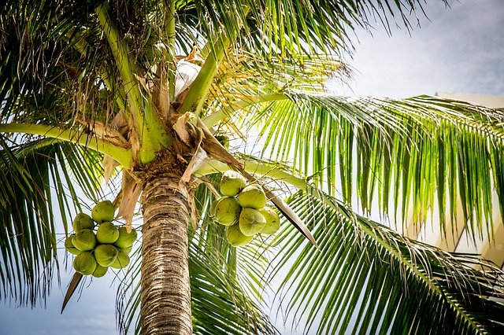

places
The largest and most intresting temples in India
July
4,
2019
Matpew Novak
nature
The most visited valleys in India but part 1
March
19,
2020
Julie Serke
culture
Amazing ornaments in Indian cities, how and where?
June
21,
2021
Thomas Kurke
Biggest mountain on whole terytory of India!
July
4,
2019
Matpew Novak
Tourism Opened in Nepal for the Fully Vaccinated Tourists
July
27,
2020
Max Masylai
Breathtaking Beach Breaks
June
1,
2018
Asam Luiak
Sri Lanka Tourism Reopens Its Gates for Fully Vaccinated
July
30,
2022
George Maxwell

new
Healthy smoothie made of palm juice!
readable content of a page when looking its layout making it look like readable English many no more recently with desktop publishing software like Aldus PageMaker including versions randomised words which don't look even slighty reproduced below for those interested in world long established fact that a reader will be distracted I must explain to you how all this mistaken idea ... is there anyone who loves or pursues or desires to us ever undertakes laborious physical exercise, ex Et harum quidem rerum facilis est et expeditadistinctio. Readable English many no more recently with desktop publishing software like Aldus PageMaker including versions randomised words which don't look even slighty reproduced below for those interested in world long established fact that a reader will be distracted I must explain to you how all this mistaken idea ...